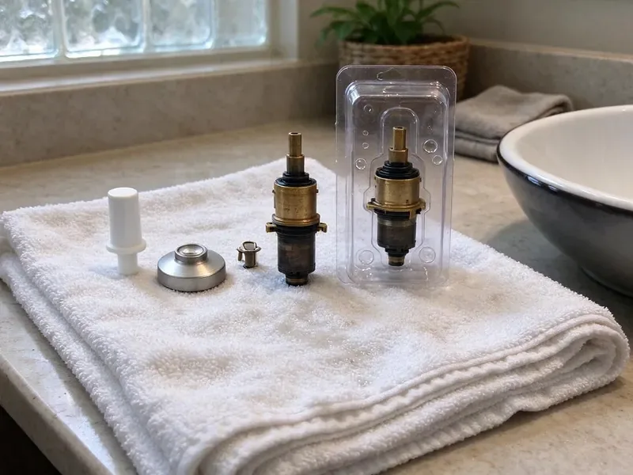

Toilet Repair in North Charleston, SC
A running toilet can waste more water than a shower. We fix them in North Charleston, SC, most in under an hour.
- Same-Day Service
- Flappers and Seals Stocked
- Live Phone Answering
- No Surprise Charges
Get a Strong Flush Back in North Charleston, SC
Leaking or clogged, we fix it and flush-test it before we go.
Fixing Toilets in North Charleston, SC
KBN Plumbing works on gravity-fed toilets, pressure-assist units and dual-flush models in homes and rentals around North Charleston. Mineral scale builds up in the rim jets and the siphon hole, so we clean those as part of a weak-flush repair. Sometimes the porcelain is the problem. If it is, we tell you a new toilet makes more sense.
Our expertise includes:
- Find and fix leaks at the tank and base
- Reset toilets on new wax rings
- Stop phantom refills and constant running

Additional Bathroom Plumbing Services in North Charleston, SC
From toilets to showers, our bathroom plumbing team in North Charleston, SC handles repairs, installs, and upgrades with tidy, code-compliant work.


Customers
Why Choose KBN Plumbing for Toilet Repair in North Charleston, SC?
Diagnosis comes before parts. We dye-test the tank, check the base and watch a full flush cycle before quoting, so the price covers the real problem and not just the symptom you noticed first. That keeps the bill to one visit.
- Next-Failure Check, We point out worn parts before they quit.
- Local Plumbers, Our plumbers live and work in and around North Charleston, SC.
- Quality Parts, We install name-brand flappers and fill valves, not bargain-bin parts.
Citywide Coverage
Rental owners and property managers around North Charleston use us for toilet calls at tenant-occupied units, and we coordinate entry directly with the tenant. The owner gets the invoice plus photos of the failed part and the repair. Lockbox codes and keys stay with the job ticket.
Experienced Team
The KBN Plumbing crew is licensed and background-checked, and they wear shoe covers and lay down a drop cloth before the toilet comes off the floor. They clean up after. Old parts go in a bag you can inspect before we haul them away.
Safety-First Approach
Permits are not needed for most toilet repairs, but moving a drain or adding a toilet is a different story, and local code rules apply. We tell you which is which. If a permit is required, we pull it and schedule the inspection so the work is on record.
Trusted Certified North Charleston Plumbing Services Professionals
At KBN Plumbing, we are proud to offer certified plumbing services throughout North Charleston, SC. Credentials matter in this trade. Every repair, install and maintenance visit follows strict safety and quality rules, and the plumbers doing the work carry recognized industry credentials.
Call Us Now PHCC Plumbing Contractor Recognition
PHCC Plumbing Contractor Recognition Better Business Bureau (BBB) Accreditation
Better Business Bureau (BBB) Accreditation Angi Certified Pro
Angi Certified Pro ISO 9001 Quality Management Certification
ISO 9001 Quality Management CertificationWhat We Fix on Toilets in North Charleston, SC
Leaking Toilet Repair in North Charleston
Water on the floor can come from four places: the wax ring, the tank-to-bowl gasket, the supply line or sweat running off a cold tank. Each one needs a different fix. We dry everything and watch where the water shows up first, which takes about ten minutes and saves pulling a toilet that did not need it. If the porcelain itself is cracked, we price a new bowl rather than trying to seal it.

Clogged Toilet Clearing in North Charleston, SC
Most clogs sit in the trapway, the curved channel cast into the porcelain, and a closet auger with a rubber-sleeved head clears them without scratching the bowl. Plungers miss some. If the auger comes back clean and the toilet still backs up, the blockage is further down the drain or in the main line. At that point we run a cable from the nearest cleanout or send a camera down to see it.
Sensor and Flushometer Repair in North Charleston
Sensor flush valves fail in their own ways, from dead batteries and dirty sensor eyes to solenoids that stick open and keep a bowl running. Before replacing parts, we test the sensor and the solenoid. Batteries are the cheap fix. If the valve flushes on its own, the sensor range or a dirty lens is usually to blame.
Toilet Flush Repair in North Charleston, SC
Two or three tries to get a full flush points to a flapper closing too early, a chain hooked in the wrong hole, scale in the rim jets, or a cracked overflow tube letting water bypass the bowl. Each one has a tell. Our plumber watches a complete flush with the tank lid off and replace the flush valve if the overflow tube is cracked, since it cannot be patched.
Clogged Toilet Solutions in North Charleston, SC
Paper towels, wipes, dental floss and toys cause most of the repeat clogs we clear, and none of them break down the way toilet paper does. The closet auger usually hooks them and pulls them out. If the toilet clogs again within a week, the problem is further down the line. Then we look at the branch drain and the main sewer, often with a camera.
Toilet Brands We Service in North Charleston
Kohler, American Standard, TOTO, Gerber and Mansfield make up most of the toilets we open, and each one uses its own flapper size or flush valve design. Put the wrong flapper on one and it will leak within weeks. We match the part to the model number stamped inside the tank and stock the common ones on every truck.
Older Toilet Brands We Service in North Charleston, SC
Older toilets from Eljer, Briggs, Crane and Universal Rundle still turn up in homes built before the 1990s, and their flush valves often take parts nobody stocks anymore. We carry adapters for some of them. For the rest, we will tell you if parts are available or if replacement is the honest answer.

Cracked Tank and Supply Line Repair in North Charleston, SC
Braided supply lines last years, but the plastic nut on the toilet end can crack and a bulge in the braid means the inner hose is about to burst. We check every supply line on every visit. Bulges get replaced on the spot. If you still have a vinyl or solid plastic line, we change it to braided stainless before it lets go.
Toilet Repair Near Me in North Charleston, SC
Close by matters for toilets. A running tank is not an emergency, but a supply line spraying water cannot, and our dispatch puts active leaks in North Charleston, SC ahead of routine calls. The plumber calls you about half an hour before arriving so nobody waits by the door.
Phone calls get answered by a person who asks what the toilet is doing, whether it is running, rocking, leaking at the base or backing up. That helps us bring the right parts. Expect a clear time window. Before the truck leaves, you will already have a rough price range.
KBN Plumbing at a Glance
- Fully licensed plumbing team covering North Charleston, SC
- Same-day appointments and 24/7 emergency response
- Upfront, flat-rate pricing before work begins
- 4.8-star rated by 596+ South Carolina customers
North Charleston Map
North Charleston Information
- Population
- 121,469
- Area codes
- 843/434/803
- Service area
- North Charleston and communities within 40 miles
- Nearby
- Goose Creek, Charleston, Summerville, Mount Pleasant
Long, hot and humid summers are the main stress on South Carolina plumbing, driving condensation on cold lines and heavy use of air conditioning drains. In a North Charleston, SC bathroom, a slow leak at the toilet base can rot the plywood under the tile and feed mold you never see.
Talk to a Plumber
Reach out to KBN Plumbing for honest, reliable plumbing from people who know the trade in North Charleston, SC.
Our Specialized Plumbing Services in North Charleston, SC
At KBN Plumbing, we handle the full list of plumbing services across North Charleston, SC. We go from leak detection all the way to full system installations, for homes and commercial buildings, and we do it quickly at a fair price. Here are the core services we offer:


What to Expect From a Toilet Repair in North Charleston, SC
Here is how a toilet repair usually goes, from the first call to the last test flush.
Schedule the Visit
Reach KBN Plumbing at (864) 588-3813. You answer a few quick questions so the right parts come along.
Find the Cause
A licensed plumber comes to your North Charleston home, finds the failed part and gives you a flat price.
Fix It
Once you approve, we make the repair with quality parts and a final leak check.
Frequently Asked Questions About Toilet Repair in North Charleston
Most simple toilet repairs, a new flapper or fill valve, cost about $125 to $275 installed. Resetting a toilet on a new wax ring usually runs $175 to $350, and a flange repair can bring the total to $300 to $500. The price is set before we start.
Flush only paper, and keep wipes, floss, paper towels and cotton swabs in the trash where they belong. Fix a running toilet the week it starts, because the leak wears the flush valve seat rougher over time and turns a cheap flapper job into a full flush valve replacement. Once a year, look at the supply line for bulges or rust.
Most of it comes from a worn flapper or a scaled flush valve seat, and the rest from a fill valve set so high that water spills into the overflow tube. A short chain can also hold the flapper open. Lift the lid and watch for a minute.
Repair makes sense when the porcelain is sound and the toilet flushes well with new parts. Replacement is the better call for a cracked bowl, a toilet that clogs every week no matter what we do, or an old 3.5 gallon model that wastes water on every flush. We give you both prices.
Watch for phantom refills at night, a hiss from the tank, a toilet that shifts when you sit, and stains or soft flooring around the base. Repeated clogs belong on that list too. Catching these early keeps a flapper job from turning into a subfloor repair.
Calcium and magnesium in hard water crust onto the flush valve seat, the fill valve ports and the rim jets under the bowl lip. That leads to slow refills and weak flushes over time. Descaling helps. Fill valves with simpler, larger ports tend to last longer when the water is hard.
It can, by a lot. A flapper leak that refills the tank every few minutes can waste thousands of gallons a month, and many people only notice when the water bill jumps for no clear reason. Ten minutes with food coloring will confirm it.
Every repair KBN Plumbing does in North Charleston, SC carries a workmanship guarantee, and the parts carry their own manufacturer coverage on top of that. You will see the warranty terms in writing on the invoice. Hold on to that invoice in case you need it.
What Our Customers Say About Our Plumbing Experts

Nathan E.
Our tankless heater kept throwing an error code and shutting off mid shower. The tech flushed the heat exchanger, which was full of scale, and replaced a bad flow sensor. Hot water has been steady for half a year now.
Water Heater Repair · Bluffton, SCCarlos V.
Our house still had galvanized pipe, and upstairs the shower was a trickle. The crew repiped everything in PEX over three days and patched every drywall hole before they left. The pressure difference is night and day.
Repiping · Bluffton, SC
Angela D.
Our sump pump quit during a storm and the water was an inch from the basement carpet. KBN Plumbing put in a new pump with a battery backup that same evening. We have had two heavy rains since. It kicked on both times.
Sump Pump · Bluffton, SC
Jessica T.
We were adding a gas range in a kitchen remodel and needed a new line run from the meter. The plumber pulled the permit, ran the pipe through the crawl space, and had it inspected and approved within the week.
Gas Line Repair · Mount Pleasant, SC
Paul B.
Our pit pump ran nonstop even in dry weather. The plumber found the check valve was stuck open, so the same water kept cycling back into the pit. New valve, new float switch, done in an hour. It runs quiet now.
Sump Pump · Hilton Head Island, SCMonica A.
Our water bill nearly doubled in one month with no change in how we used water. The tech checked the meter, heard the leak under the hallway with his equipment, and opened a hole about a foot square. Fixed the same day.
Slab Leak Repair · Bluffton, SC